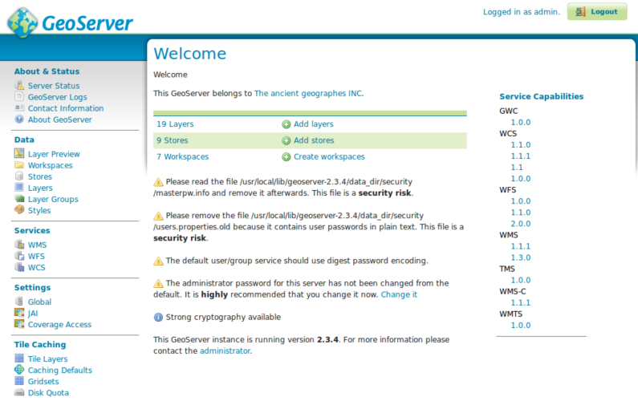
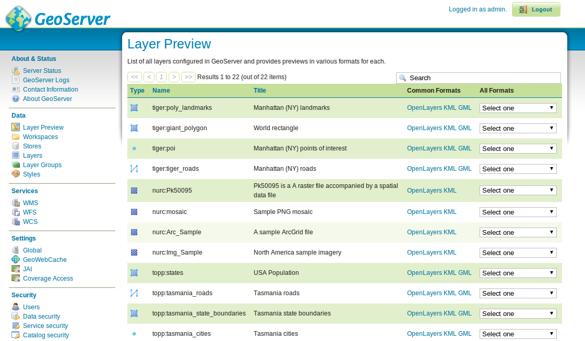
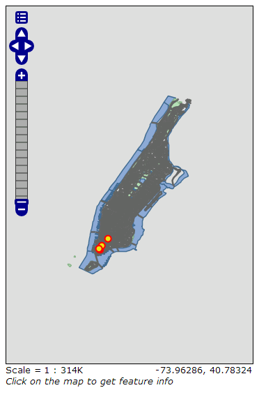
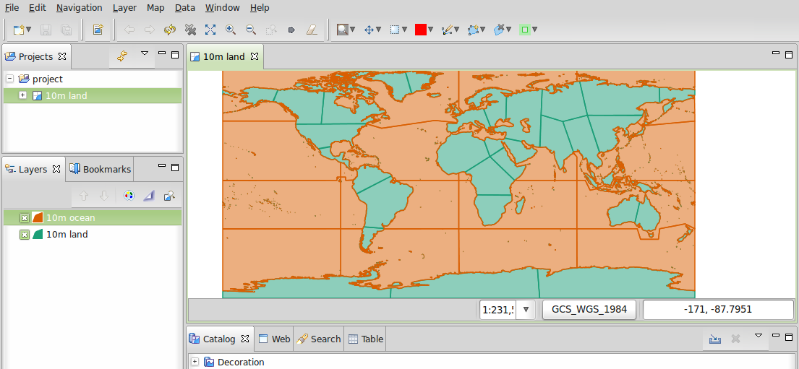
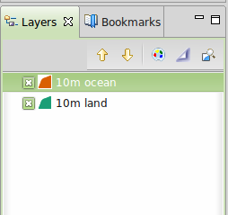
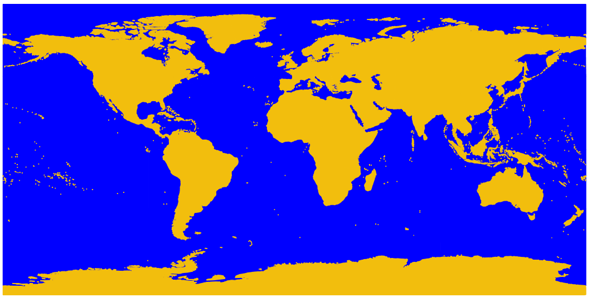

GeoServer Quickstart¶
GeoServer ist ein WebServer in Java, der es ermöglicht Karten und Daten verschiedener Formate Standardanwendungen wie einem Web Browser und Desktop GIS Anwendungen bereit zu stellen.
Dieser Quickstart beschreibt, wie man:
- Vektor und Rasterdaten einer Geoserver-Instanz hinzufügt
- Farben für einen Stil anwendet, der sich auf die Darstellung von Kartenobjekten auswirkt,
- veröffentlichte Daten in einer einfachen Web-basierten Karte testet,
- Karten in anderen Applikationen darstellt und welche Applikationen hierfür verwendet werden können und
- einen NetCDF Layer hinzufügt
Contents
Start GeoServer¶
- Starten Sie den GeoServer über das Applikationsmenü
- Die Applikation benötigt einen kurzen Augenblick um zu starten und öffnet eine Webseite unter http://localhost:8082/geoserver/web

Erste Oberflächen¶
Öffnen Sie erstmalig die GeoServer Startseite, werden sie die Ansicht wie oben zu Gesicht bekommen. Um den GeoServer administrieren zu können, müssen Sie sich anmelden mit den Benutzer admin und dem Passwort geoserver. Im Anschluss daran sehen Sie die admin page.
{kind=link}
Über den Link zur Layer-Vorschau (Layer Preview) innerhalb des Data Bereiches im linken Menübaum ermöglicht es Ihnen, die Layer des GeoServers anzusehen.
{kind=link}
Scrollen Sie die Seite soweit herunter, dass eine Zeile mit tiger-ny sehen und klicken Sie auf den OpenLayers Link. Es öffnet sich eine neue Seite, in der Sie ein Kartenfenster mit Inhalt des Layers sehen.
{kind=link}
Sie haben in diesem Kartenfenster drei Möglichkeiten, Kartenausschnitte einzustellen:
- im linken Bereich über die Navigationsleiste können Sie mit einem Klick auf + den Ausschnitt verkleinern und somit mehr Details sehen. Mit einem Klick unterhalb des Schiebereglers können Sie den Ausschnitt mit - vergrößern um weniger Details zu sehen und somit eine Übersicht zu erhalten. Sie können auch den Schieberegler selbst nutzen, um den Detalierungsgrad festzulegen.
- Über das Scrollrad der Maus, sofern sie eine Scrollmaus nutzen, können Sie beim Drehen nach oben hineinzoomen und beim Drehen nach unten herauszoomen.
- Bei gedrückter
ShiftTaste können Sie mit der Maus ein Rechteck aufziehen, um einen Bereich anzeigen zu lassen.
Experimentieren Sie mit dieser Vorschau und testen Sie auch die anderen Daten. Sobald Sie einen Eindruck gewonnen haben, wie es sich anfühlt, Daten anzusehen, können Sie beginnen, selbst welche einzubinden und zu veröffentlichen.
Daten einbinden¶
Bemerkung
Sie werden nicht in der Lage sei, die folgenden Schritte durchzuführen, wenn Sie ein read only Dateisystem nutzen, so bei der DVD. Für diesen Fall sollten Sie entweder GeoServer von der DVD auf das Dateisystem installieren oder ein USB Stick basiertes System nutzen.
In diesem Beispiel werden wir die Natural Earth Datensätze nutzen, die in OSGeoLive mit enthalten sind (/usr/local/share/data/natural_earth2/).
Es muss ein Store für unsere Daten angelegt werden. Von der GeoServer Administrationsseite gehen Sie zu Stores und klicken Sie auf Add new Store. Folgende Ansicht werden Sie vor sich haben:

Wählen Sie Directory of spatial files und sie werden folgendes sehen:

Geben Sie einen Namen für den Store an - hier wurde Natural Earth eingegeben - sowie eine URL für den Datensatz, in unserem Fall /usr/local/share/data/natural_earth2/. Sie können die Browse Schaltfläche nutzen, um ein Verzeichnis auf dem Dateisystem zu finden, falls sonstige Daten eingebunden werden sollen. Um den Vorgang abzuschließen, bestätigen Sie mit Save.

Klicken Sie auf Publish auf einen der Einträge der nächsten Seite, um das veröffentlichen der Layer abzuschließen. Dies wird sie zur Layers Seite führen:

Wie Sie beim Scrollen bemerken werden, hat GeoServer bereits viele Felder ausgefüllt. Wenn Sie den Punkt Coordinate Reference System erreichen, werden sie feststellen, dass unter Native SRS UNKNOWN zu finden ist. Sie werden in der nächsten Box (declared SRS) Daten eingeben, um für GeoServer sicherzustellen welches Koordinatensystem für die Daten zugrundeliegt. Geben Sie bitte epsg:4326 in das Eingabefeld ein.
Bemerkung
Sollten Sie sich den Layer über die Voransicht ansehen und nicht mit der Darstellung der Daten zufrieden sein, liegt dies daran, dass ein Standard-Stil verwendet worden ist. Wie der Stil eines Layers angepasst wird, wird im folgenden Kapitel beschrieben.
Sie können die Prozedur mit weiteren Layern vollziehen, um auch diese zu veröffentlichen. Dabei haben die Möglichkeit über die Layer Seite eine neue Ressource mit Add a new resource hinzuzufügen. Auf der folgenden Seite wählen Sie den bereits angelegten Natural Earth Store in der Auswahlliste aus, um diesem die neue Ressource zuzuordnen.
Anpassen der Stile¶
Um den Stil eines Kartenlayers anzupassen, wird im GeoServer der OGC Standard Styled Layer Description (SLD) verwendet. Stile werden über Regeln (Rules) in XML definiert und steuern somit die Repräsentation der Daten über verschiedene Ausgestaltungen (Symbolizers).
Sie können eine SLD Datei mit einem einfachen Texteditor erzeugen, es ist jedoch empfehlenswert, einen Grafischen Editor zu nutzen. Es gibt hierfür viele Möglichkeiten, an dieser Stelle wird auf uDig eingegangen, weil hier direkt Shapefiles per Drag&Drop eingebunden werden können und eine Oberfläche bereitgestellt wird, die es dem Anwender erlaubt auch XML direkt eingeben zu können.
uDig verwenden, um einen einfachen Stil zu erzeugen¶
Bemerkung
Weitere Informationen, wie uDig zu verwenden ist, können Sie unter uDig Quickstart finden.
Sobald Sie uDig gestartet haben, können Sie per Drag&Drop die Shapefiles ne_10m_land und ne_10m_ocean hinzufügen, uDig setzt den Stil automatisch, um die Daten anzeigen zu können:
{kind=link}
Nun ist Orange nicht die bevorzugte Farbe, um Ozeane darzustellen, auch wenn man mit grün dargestellten Ländern leben könnte. Zum Ändern eines Stils des aktuell ausgewählten Layers in der Liste der Layer klicken Sie auf den Style Button - dieser sieht aus wie eine Farbpalatte - in der Toolbar.
{kind=link}
Es wird ein Stil Dialog geöffnet, Sie können einfach die Farbe der Flächen in dem Tab Fill auf ein zusagendes Blau abändern. Zusätzlich wurde bei dem Beispiel der Ozeane die Deckkraft (opacity) auf 100% gesetzt. Ebenso wurde die gleiche Farbe für die begrenzenden Linien (im Tab Border) festgelegt.

Haben Sie einen Stil zu Ihrer Zufriedenheit konfiguriert, können Sie diesen Dialg mit OK verlassen, uDig wird die Änderungen anwenden und die Karte neu darstellen.
{kind=link}
Abschließend möchten wir die Farbe für die Landflächen abändern. Gehen Sie so wie eben vor, indem Sie zuvor den Layer
der Länder auswählen. Gefällt Ihnen keine der Standardfarben, können Sie eine benutzerdefinierte Farben (define custom colors) selbst festlegen.
{kind=link}
Dies ergibt eine angenehmer anzusehende Karte.
{kind=link}
Stil in GeoServer hinzufügen¶
Jetzt können die definierten Stile in GeoServer transferiert werden. Im Stil Dialog von uDig ist eine Schaltfläche für den Export zu finden. Hierüber kann der Stil in einer SLD Datei gespeichert werden. Sobald Sie die Dateien für die beiden Layern gespeichet haben, können Sie in die Administrator-Seite vom GeoServer wechseln und im linken Menü Styles klicken. Wählen Sie im Anschluss daran den Link Add New Style, auf der daraufhin folgenden Seite scrollen Sie nach ganz unten, eine Schaltfläche für den Import ist hier zu finden. Importieren Sie die zuvor in uDig exportierten Dateien, der Inhalt wird jeweils im Editorbereich angezeigt werden. Sie können den Stil validieren. Sollte der Stil nicht korrekt sein, wird eine entsprechende Fehlermeldung erscheinen und der betroffene Bereich der Datei markiert. Sollten Fehler beim Validieren auftreten, können Sie diese gefahrlos ignorieren oder den betroffenen Bereich entfernen, sofern er nicht relevant ist.
{kind=link}
Stil auf einen Layer anwenden¶
Klicken Sie im linken Menü der Administrationsoberfläche von GeoServer auf den Link Layers. Wählen Sie in der Liste z.B. den Layer 10m_land, auf folgenden Seite gehen Sie auf den Tab Publishing und ändern Sie in der Auswahlbox Default Style den Stil auf den zuvor hinzugefügten. Gehen Sie nun auf die Layer Preview Seite und prüfen Sie, ob dieser gut aussieht.
Bemerkung
Sie können für alle Natural Earth Datensätze beispielhafte Stil-Definitionen unter /usr/local/share/geoserver finden.
Clients für WMS Layer¶
Eine große Anzahl von Clients unterstützt den WMS Standard und kann die vom GeoServer veröffentlichen Daten verarbeiten. Hier eine kleine Auswahl:
NetCDF¶
Das NetCDF Plugin von GeoServer NetCDF ermöglicht die Einbindung von Rasterlayern aus NetCDF Files.
Einen NetCDF Speicher anlegen¶
After running „Start GeoServer“, login as the administrator, click on „Add stores“ then „NetCDF“. Enter a value for Data Source Name (this example uses „netcdf“) and a NetCDF URL. You can use this sample file:
file:///usr/local/share/data/netcdf/polyphemus_20120401.nc
Press „Save“, „Publish“ the „O3“ layer, then scroll down to the bottom of the „Data“ tab and press „Save“ again.
{kind=link}
Vorschau des NetCDF Layer¶
Select „Layer Preview“ from the menu on the left, scroll down to find the „cite:O3“ entry, and click on the „OpenLayers“ link to show a preview of the layer. Clicking on points will cause the value of „Ozone_concentration“ to be shown in a table at the bottom of the map.
{kind=link}
Bemerkung
This GeoServer instance has been configured with the NETCDF_DATA_DIR Java system property to allow the publication of NetCDF files in read-only directories.
Was kommt als Nächstes?¶
This is only the first step on the road to using GeoServer. There is a lot more functionality you can try.
GeoServer Projectseite
GeoServer Benutzerhandbuch
GeoServer Tutorials
GeoServer Styling Workshop